SPACE
공간기획 · 인테리어 · 설계 · 시공 · 건축자재
기업·업무·상업·의료·전시공간을 중심으로 축적한 공간 구현 경험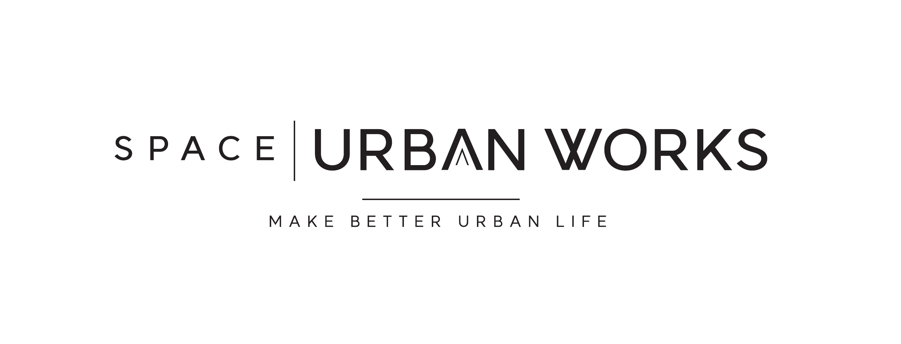
공간을 기획하고, 도시를 연구하며,
개발의 가능성을 현실로 만듭니다.
MAKE BETTER URBAN LIFE
ONE COMPANY. TWO PROFESSIONAL ROOTS.
SPACE URBAN WORKS는 공간을 만드는 전문성과 도시를 읽는 전문성을 결합한 공간·도시 전문기업입니다.
SNDID가 축적해 온 공간기획·인테리어·시공·건축자재의 실무 경험과 유알공간도시연구소의 도시계획·정책연구·개발컨설팅 역량을 하나의 브랜드와 조직으로 통합했습니다.
현황과 수요를 분석하고, 사업의 방향을 기획하며, 공간을 설계하고 구현하는 전 과정을 연결합니다.
SPACE + URBAN → WORKS
SNDID의 공간기획·인테리어·설계·시공 경험과 유알공간도시연구소의 도시계획·정책연구·개발컨설팅 역량을 하나로 연결합니다. 공간과 도시를 따로 보지 않고, 사업의 처음부터 실행까지 함께 설계합니다.
공간기획 · 인테리어 · 설계 · 시공 · 건축자재
기업·업무·상업·의료·전시공간을 중심으로 축적한 공간 구현 경험도시계획 · 정책연구 · 개발컨설팅 · 공간분석
도시와 지역의 문제를 데이터로 진단하고 정책과 사업전략으로 연결해 온 연구 경험주거·업무·상업·복합공간의 기획, 인테리어, 설계
내·외장 디자인, 시공, 공사관리 및 프로젝트 실행
프로젝트에 적합한 건축·인테리어 자재의 발굴과 공급
도시계획, 도시재생, 지역개발, 주택·부동산 및 정책연구
입지·시장·수요 분석, 개발기획, 사업성 및 타당성 검토
통계, GIS, 공간빅데이터를 활용한 근거 기반 분석
SPACE URBAN WORKS는 SNDID의 공간사업 경험과 유알공간도시연구소의 도시·연구 경험을 계승합니다.
SNDID LEGACY TRACK RECORD
Interior · Design · Construction · Material
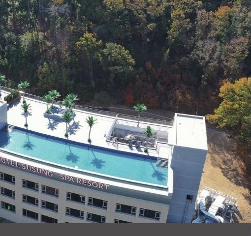
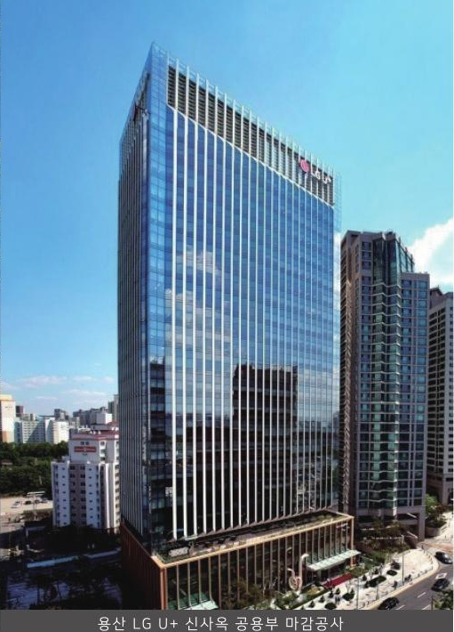
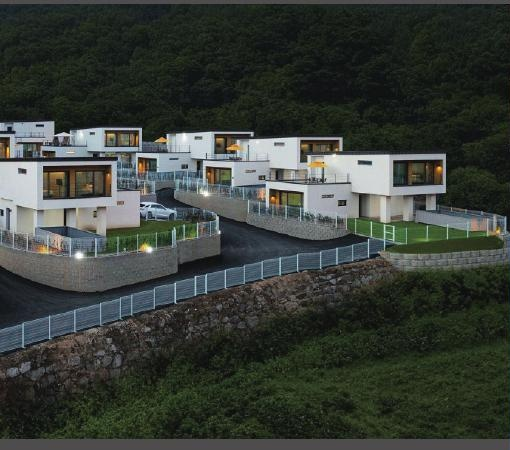
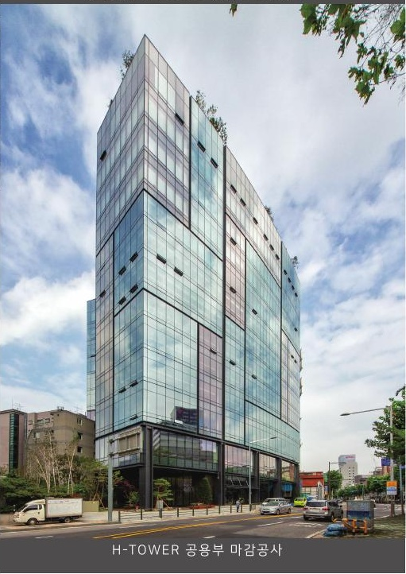
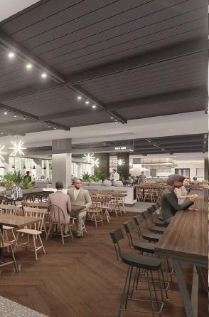
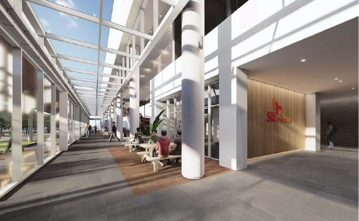
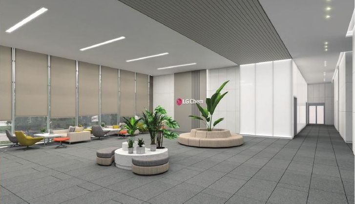
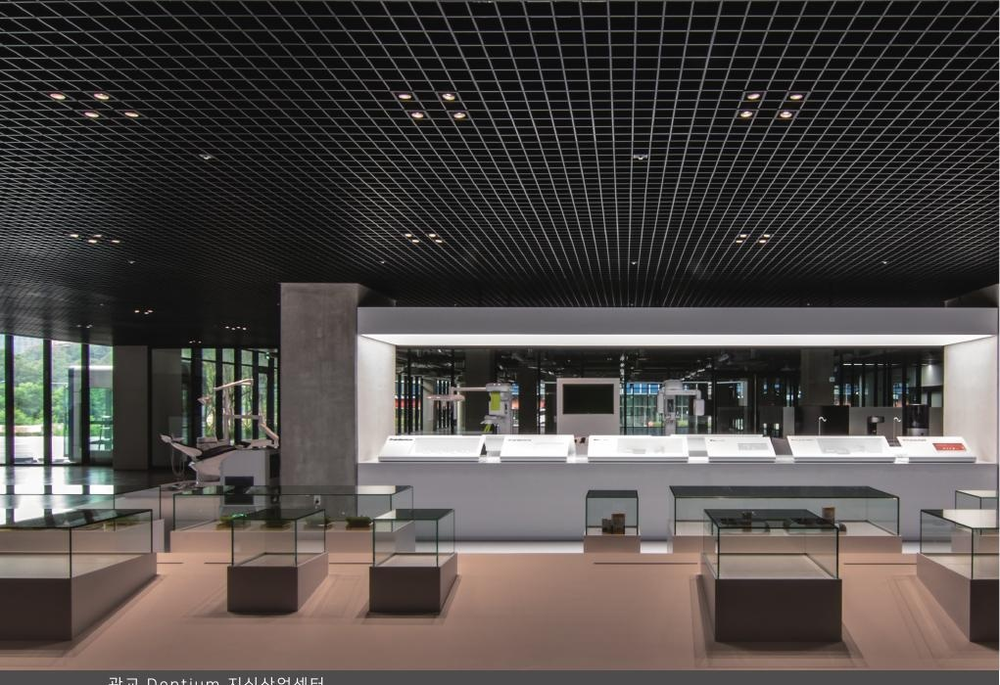
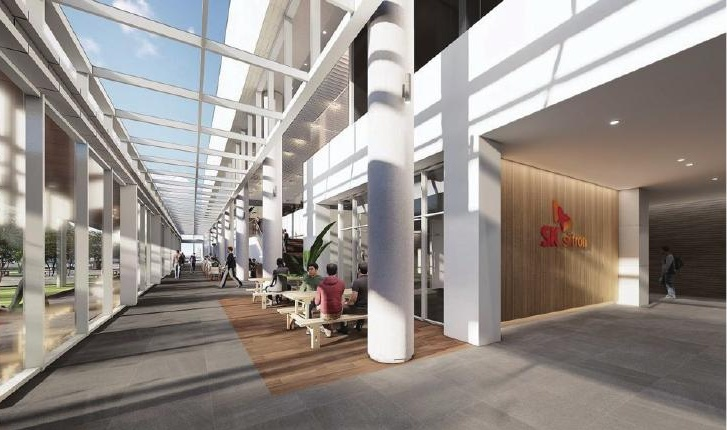
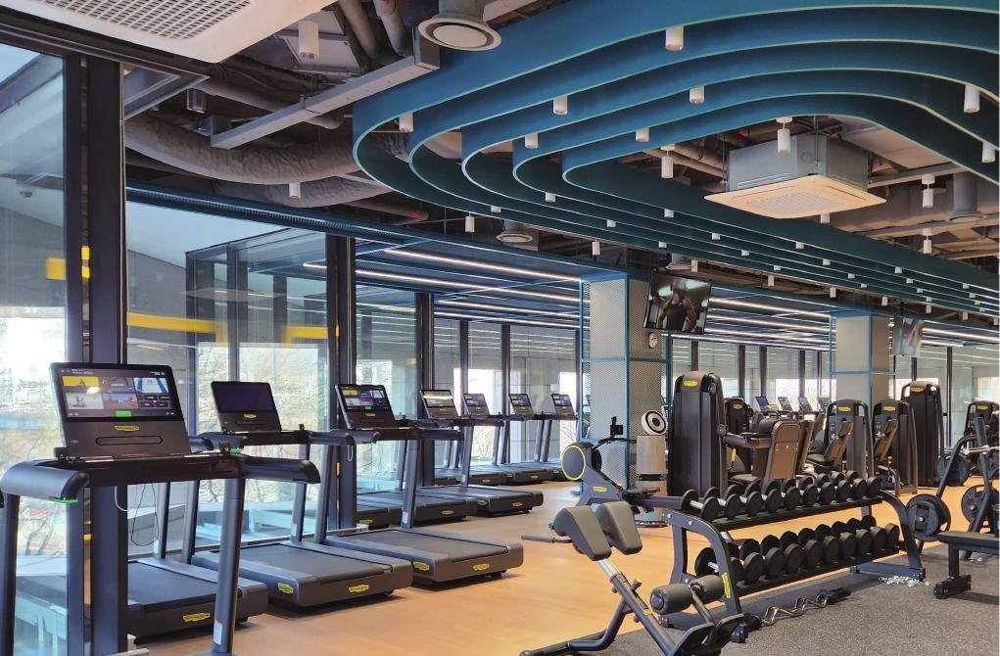
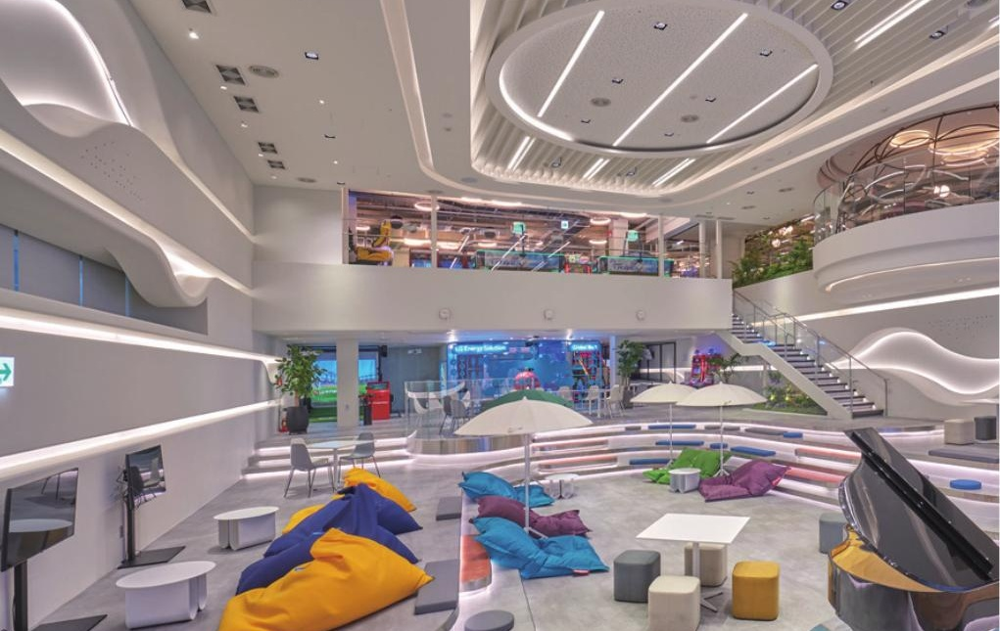
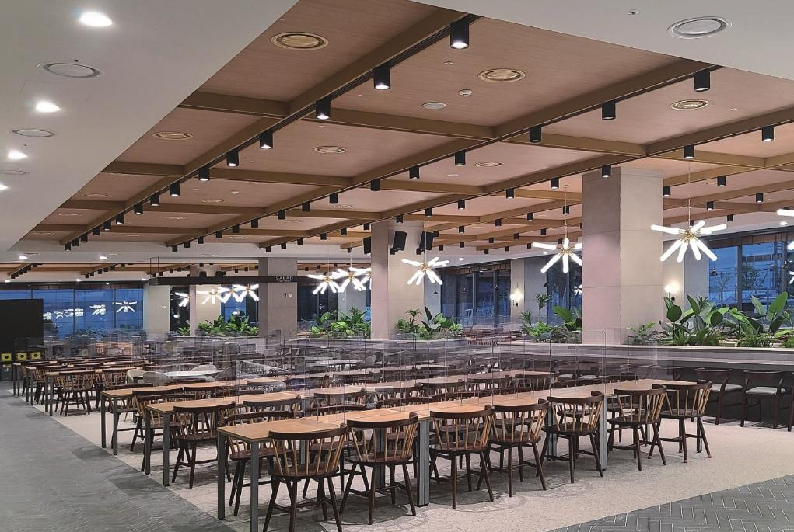
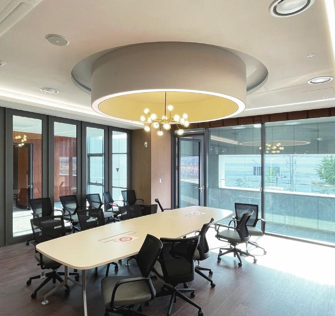
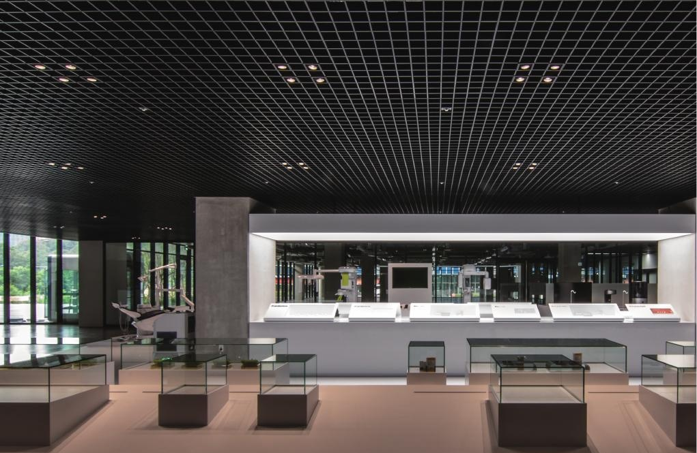
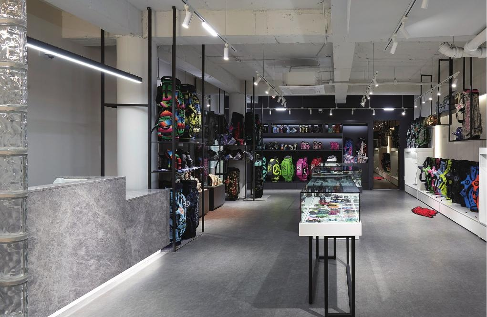
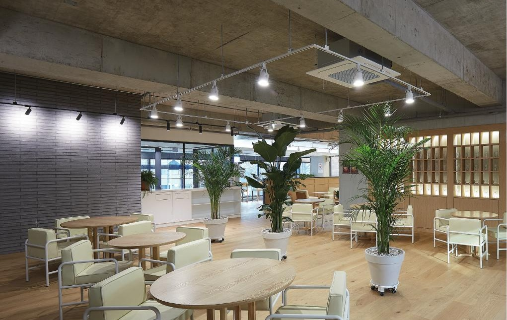
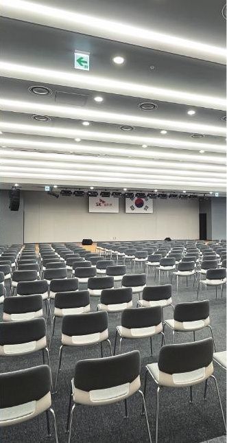
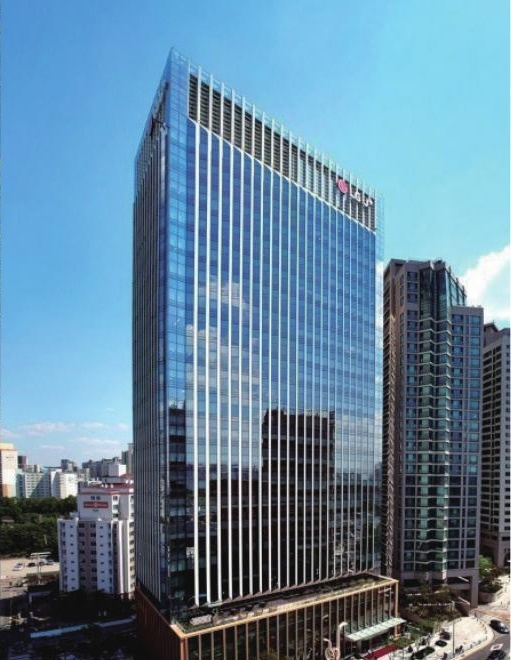
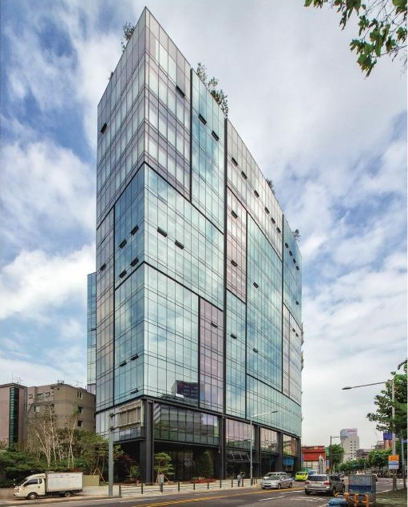
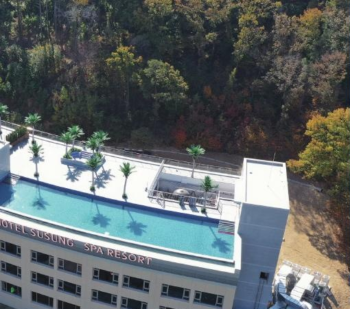
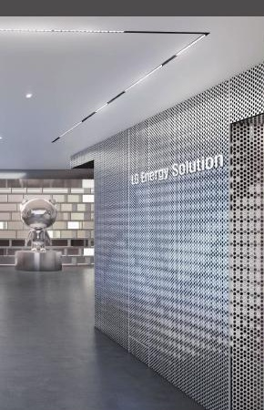
UR SPACE LEGACY TRACK RECORD
Urban Planning · Policy · Development · Data
도시계획·도시재생·주택정책·지역개발·타당성조사·지역안전·GIS 및 공간빅데이터 분석 등 공공·민간 연구와 컨설팅을 수행해 왔습니다.
URBAN RESEARCH LAB
유알공간도시연구소가 축적해 온 연구자산은 SPACE URBAN WORKS 도시연구실로 이어집니다. 데이터와 현장을 바탕으로 도시와 지역의 변화를 읽고, 실행 가능한 정책과 사업전략을 제안합니다.
도시계획 · 도시정책 · 제도개선
도시재생 · 농촌재생 · 지역활성화
주택정책 · 주거복지 · 부동산
지역개발 · 개발사업 · 타당성
지역안전 · GIS · 공간빅데이터
논문 · 학술활동 · 수상 · 전문위원 활동 · EVENT / 대외활동 · 언론보도
VIEW PROFILE →ORGANIZATION
경영·공간기획·도시연구의 전문성을 하나의 프로젝트 체계로 연결하여 기획부터 실행까지 일관된 서비스를 제공합니다.
회사의 비전과 사업전략을 수립하고, 공간·도시·개발 분야의 주요 프로젝트 방향과 대외 협업을 총괄합니다.
Corporate Strategy · Business Direction · Project Leadership대표 프로필 보기 →회사의 안정적인 운영을 위한 총무·인사·행정·계약·재무지원 업무를 담당하고, 각 사업부문의 프로젝트 운영을 지원합니다.
General Affairs · HR · Administration · Business Support공간기획부터 인테리어·디자인·시공관리·건축자재까지 실제 공간 구현에 필요한 전 과정을 기획하고 수행합니다.
Space Planning · Interior · Design · Construction · Material도시계획·도시재생·주택·부동산·지역개발·지역안전 분야의 연구와 개발컨설팅을 수행하며, 통계·GIS·공간데이터 기반의 분석을 제공합니다.
Urban Planning · Policy Research · Development Consulting · Spatial AnalysisSTART A PROJECT